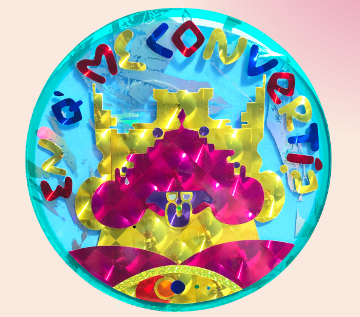
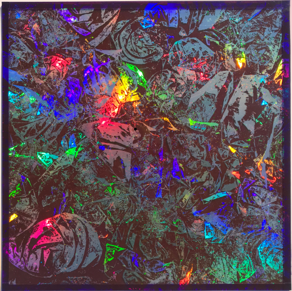

'No entiendo nada'. Vinilos holográficos y traslucidos sobre vidrio. 22.5 cm diametro.
PALABRA DE ORO. Vinilos holográficos y traslucidos sobre vidrio. 22.5 x 26 cm.

'EN Q'ME CONVERTÍ?'. Vinilos holográficos y traslucidos sobre vidrio. 22.5 cm de diámetro.
'EN Q'ME CONVERTÍ?. Vinilos holográficos y traslucidos sobre vidrio. 33 cm de diametro.
'Ahora solo te veo en visiones'. Vinilos holográficos y traslucidos sobre vidrio. 60 x б0 cm
'Consciencia Fungi'. Vinilos holográficos y traslucidos sobre vidrio. 30 x 30 cm

'La madre regó al limonero
porque no crecía,
y después dio muchisimos..'. 30 x 30 cm
'Todo el Tiempo del Mundo Llega'. 30 x 30 cm
'Cacao'. 30 x 30 cm
'Lagoa Mediiação
refleiida em meu Coração'. 30 x 30 cm
'PODÉS MANTENER TU PALABRA UN MES?'. 1 mi x 60 cm
Interkevs (Navarro, 1990) – El carácter de su obra profundiza sobre un mundo místico. Donde sin perder la conciencia, se puede enirar a un
mundo de ensueño que, frecuetemente parece más real que el mundo normal. Cada obra es un pequeño pasaje.
donde se capturan momentos de ese mundo que aguarda latente a ser visto.
.
Exposiciones
2024 Colectiva - El Casiillo de Diego De Aduriz La Greco - САВА
2023 Colectiva - El Casiillo de Diego De Aduriz- CABA
2022 Colectiva - A.F.A.B. Asociación Fuiurisia Anii Binaria - Muiio Radio - САВА
2022 Colectiva - El Casiillo de Diego De Aduriz - MACBА
2021 Colectiva El Casiillo de Diegó De Aduriz - Aldo de Sousa Galeria - CAВА